Tópico 3: Rotina e Hábitos; Alimentação e Lista de Supermercado; Vestuário
3.1 Shopping at the mall
É Black Friday e Rosa e Carly estão na expectativa de conseguir some great deals. Carly, ansiosa por aproveitar as promoções, chega um pouco mais cedo e vai direto à loja de sapatos. Acompanhe a seguir o diálogo que ela estabelece com o vendedor.
Salesman: Can I help you?
Carly: Yes, please. I wanna try on these shoes.
Salesman: What’s your shoe size?
Carly: Seven and a half.
Salesman: Wait a minute.
Após experimentar as botas, Carly segue ao encontro de Rosa em outra loja. Veja a seguir o que Rosa está precisando comprar.
3.2 Getting the hang of it
Rosa já está há algum tempo morando longe do Brasil e com a chegada do inverno, ela percebeu que estava desprovida de roupas apropriadas para enfrentar o frio de Chicago que pode chegar a -5ºC. Para resolver esse problema, ela se dirige a uma department store para comprar algumas roupas mais quentes. Acompanhe a conversa que as personagens tiveram com a vendedora na loja.
Saleswoman: Good morning. Can I help you?
Rosa: Yes, sure. I’m looking for some warm clothes.
Saleswoman: Do you have anything in mind?
Rosa: In fact, no. I just want some clothes to make me warm.
Carly: She needs coats, jackets, boots, sweaters, things like that.
Saleswoman: Well, in this section you can find coats, jackets, boots, sweaters, everything you need. By the way, how about these coats? They’re very nice and warm enough.
Rosa: They’re very beautiful. What do you think, Carly?
Carly: Yes, they’re very beautiful and the price is also good.
Rosa: This coat is too big. Do you have it in another size ?
Saleswoman: Here you are. This one is medium.
Rosa: Thanks. Can I see a sweater, please?
Saleswoman: Sure. Here you are. The sweaters come in three different colors: yellow, light green and brown. And in four different sizes: small, medium, large and extra-large.
Carly: Wow! This solid brown sweater is really nice!
Rosa: I agree. It’s really beautiful. But look at the price! It’s very expensive!
Carly: Wool is always expensive.
Rosa: Yeah, but $400.00 is too much.
Saleswoman: Look, there are other models over there. Would you like to see them?
Rosa: Yes, please.
Enquanto Rosa procura por great deals para suas winter clothes, algumas peças de roupa foram mencionadas. Que tal você conhecer um pouco mais sobre roupas e, se um dia estiver em uma situação semelhante à de Rosa, conseguir fazer compras conforme suas necessidades?
3.3 Clothing
Clothes
Observe os nomes de algumas peças de vestuário, acessórios, sapatos e peças íntimas:
Accessories
 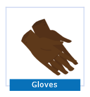
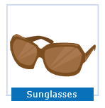
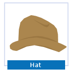
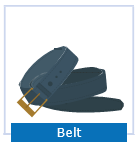
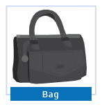
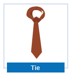
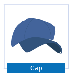
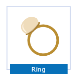
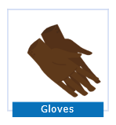
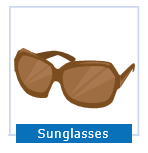
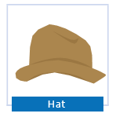
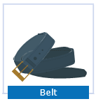
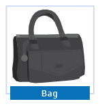
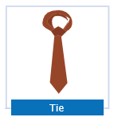
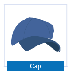
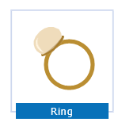
Footwear
Underwear
Quando compra um item de vestuário, você normalmente quer que ele esteja ao máximo adequado às suas preferências. Por isso, é importante que você conheça os nomes dos padrões de estampa e dos materiais para poder expressar exatamente o que você deseja. Rosa, por exemplo, ao escolher um sweater, demonstra interesse pelo solid brown sweater . Acompanhe outras estampas a seguir:
O material de que roupas e calçados são feitos também tem grande importância, já que para diferentes épocas do ano você necessita de peças que o aqueçam ou que sejam mais leves. Conheça alguns materiais que você poderá escolher quando estiver comprando itens de vestuário.
| Materials | Português |
|---|---|
| cotton | algodão |
| linen | linho |
| wool | lã |
| silk | seda |
| satin | cetim |
| lace | renda |
| velvet | veludo |
| fleece | tecido; malha polar |
| leather | couro |
| canvas | lona |
| suede | camurça |
No próximo tópico você vai conhecer algumas Time expressions que poderão situar no tempo uma ação em desenvolvimento.
3.4 Time expressions
Ainda na loja, já na fila do caixa para pagar as compras, Rosa e Carly encontram Dube, que estava ali para comprar uma leather jacket e jeans. Os garotos conversam e Dube convida as amigas para um snack na food court. Elas aceitam o convite e os três se dirigem ao local.
Carly: Hey Rosa, look who’s there!
Rosa: It´s Dube! Hi, Dube!
Dube: Hi, girls! What are you doing here?
Rosa: We’re shopping for some warm clothes.
Carly: Rosa is shopping for some warm clothes. I’m just helping her.
Rosa: How about you? What are you doing here?
Dube: I’m shopping for a leather jacket and some jeans. Winter is getting really cold this year.
Rosa: Tell me about it! It’s freezing now!
Dube: Say girls, what are you planning to do next?
Carly: Nothing special. Why?
Dube: How about a snack at the food court?
Rosa: Good idea!
Carly: Yeah, shopping always makes me hungry.
Em uma das falas de Rosa ela diz que o tempo está congelante, e ela faz menção ao tempo de agora. Para isso, ela usou now. Acompanhe na tabela a seguir outras time expressions.
| Expressions of time | Expressões de tempo |
|---|---|
| now | agora |
| right now | agora (já); neste exato momento |
| nowadays | hoje em dia |
| at the moment | no momento |
| just | quase; apenas |
As expressões que indicam o tempo da ação verbal devem vir no final (posição mais comum) ou no início da sentença. Por isso Rosa diz: It’s freezing now. Veja outros exemplos:
I´m wearing a blue tie right now.
At the moment, Carlton is working at the mall.
The girls and Dube are having a snack at the mall now.
A exceção a essa regra fica por conta do advérbio just, que deve vir entre o verbo To be e o verbo principal.
Our parents are just finishing their meal.
Nos exemplos que você acabou de ver, os itens que indicam quando a ação ocorre, frequentemente são utilizados com o Present Continuous. Você irá conhecê-lo no próximo tópico.
3.5 Present Continuous tense
No diálogo entre Rosa, Carly e Dube eles comentam o que estão fazendo na department store naquele momento. Essa é exatamente uma das características do Present Continuous: expressar uma ação que está em desenvolvimento no presente e, portanto, não está acabada. Escute os exemplos retirados das falas dos personagens e tente identificar as ações às quais eles se referem, percebendo que elas acontecem no momento em que foram faladas.
Rosa is shopping for some warm clothes. I’m just helping her.
Winter is getting really cold this year.
What are you planning to do next?
Em relação à sua estrutura, o Present Continuous é formado por dois verbos: pelo verbo auxiliar To be em suas formas do presente (am, is, are) e pelo verbo principal da sentença, indicador da ação em progresso, que receberá o sufixo -ing .
O -ing será acrescentado à forma de infinitivo do verbo principal, ou seja, apenas o verbo, sem a partícula To. Já o verbo To be deverá sempre concordar com o sujeito da sentença (que poderá ser um pronome pessoal):
Rosa, Carly and Dube are shopping at the mall.
Acompanhe outros exemplos baseados na cena de Rosa, Carly e Dube having a snack.
| Subject | Verb to be | Verb + ing | Complements |
|---|---|---|---|
| Dube | is | eating | his hamburger. |
| Carly | is | speaking | on the phone. |
| Rosa | is | drinking | coke. |
| They | are | sitting |
Ao acrescentar o sufixo -ing ao verbo principal é preciso ficar atento à sua forma no infinitivo, pois há casos em que ocorre uma mudança no verbo principal. Em geral, os verbos apenas recebem o -ing sem necessidade de mudança no verbo.
clean - cleaning
sleep - sleeping
sell - selling
Entretanto, haverá mudança no verbo principal nas seguintes situações:
- Quando o verbo terminar na letra “e” e ela não for pronunciada, o que geralmente ocorre quando, na escrita, se tem um único “e”. A letra “e” então desaparecerá antes de acrescentarmos o sufixo -ing.
| use - using |
| live - living |
| invite - inviting |
A exceção a esta regra é see que conjugado no Present Continuous fica seeing.
- Quando o verbo possuir apenas uma sílaba e essa sílaba terminar na sequência consoante-vogal-consoante (CVC). Nesse caso, a última consoante será duplicada antes do sufixo ser acrescentado.
| shop - shopping |
| run - running |
| stop - stopping |
| sit - sitting |
- Quando o verbo possuir duas sílabas, sendo a última tônica (ou seja, a mais forte) e terminar na sequência CVC, a consoante final também será duplicada
begin - beginning
Quando o verbo terminar em “ie”, estas letras serão substituídas por “y” antes do acréscimo do -ing.
| die - dying |
| lie - lying |
| tie - tying |
Depois de recobrar as energias, visando otimizar as buscas por great deals, os garotos decidem separar-se. Mas depois de algum tempo, Rosa telefona a fim de saber o que Carly está comprando. Na conversa, você pode perceber o Present Continuous sendo usado para designar o que as garotas estão fazendo no momento em que falam.
Rosa: Hello!
Carly: Hi, dear! What are you doing now?
Rosa: I´m shopping for wool socks to wear with my brown leather boots. And you?
Carly: Oh, great! I’m shopping for a raincoat! I’m trying it on right now.
Rosa: Nice! How much is it?
Carly: It’s only 49 dollars!
Rosa: What a bargain! I’m paying for my socks just now and after that I’m going after you. I’m interested in this raincoat.
Carly: Ok, dear! I’m waiting for you!
Toda língua possui suas peculiaridades e com o inglês não é diferente. Portanto, é preciso ficar atento não só a essas regras que você acabou de ver, mas também a alguns verbos que, em inglês, normalmente não são utilizados no Present Continuous.
É importante neste momento saber que alguns verbos geralmente não são utilizados com -ing (que dá a ideia de uma atividade em acontecimento). Aqui estão alguns deles:
| CLASSE DE VERBOS | VERBOS GERALMENTE NÃO UTILIZADOS EM TEMPOS CONTÍNUOS |
|---|---|
| Verbos que indicam estado mental ou emocional | believe doubt imagine know like love hate prefer remember want enjoy |
| Verbos que indicam posse | belong own possess |
| Verbos relacionados a sentidos | appear hear look see smell taste |
| Verbos que indicam reações | agree disagree deny promise satisfy surprise |
| Outros verbos | consist depend deserve fit need |
A lista de verbos que normalmente não podem ser utilizados no Present Continuous é realmente um tanto extensa. Porém, conforme você for exercitando suas habilidades na língua inglesa, esse conhecimento será incorporado à sua prática sem maiores problemas.
Você já estudou nesta aula que as sentenças afirmativas no Present Continuous obedecem a um padrão estrutural, ou seja, os elementos principais que compõem uma sentença têm posições fixas dentro dela. Observe novamente essa estrutura:
| Subject | Verb to be | Verb + ing | Complements |
|---|---|---|---|
| I | am | trying on | brown boots. |
| Carly | is | talking | in the store. |
| The girls | are | shopping for | a rain coat. |
A partir do conhecimento de que o verbo To be faz parte da estrutura do Present Continuous, fica fácil entender que, para a formação de negativas, basta utilizar o To be na forma negativa. Verifique:
| Subject | Verb to be + not | Verb + ing | Complements |
|---|---|---|---|
| I | am not | cleaning | my bedroom now. |
| Carly | is not | shopping | with Billy right now. |
| The girls | are not | walking | with Billy and Dube at the moment. |
Já para as sentenças interrogativas do tipo yes-no questions, a sequência dos elementos da sentença afirmativa muda, pois, conforme a regra de funcionamento do verbo To be, este deve ser posto antes do sujeito ao qual ele se refere. Veja alguns exemplos:
| Verb to be | Subject | Verb + ing | Complements |
|---|---|---|---|
| Am | I | wearing | the right clothes? |
| Is | Carly | buying | high heels? |
| Are | The girls | having | a snack with Dube? |
As respostas mais comuns para esse tipo de pergunta são as short answers por não haver a necessidade de darmos uma informação completa. As short answers sempre começam com Yes ou No, e, no caso das utilizadas com o Present Continuous, são complementadas pelo verbo To be . Acompanhe:
| Yes-no question | Affirmative short answer | Negative short answer |
|---|---|---|
| Are you shopping for winter clothes? | Yes, I am. | No, I’m not. |
| Is Dube buying a leather jacket? | Yes, he is. | No, he isn’t. |
| Is Rosa talking on the phone? | Yes, she is. | No, she isn’t. |
| Is the TV working? | Yes, it is. | No, it isn’t. |
| Are Dube and Rosa having ice cream? | Yes, they are. | No, they aren’t. |
A contração do verbo To be nas short answers só é possível na resposta negativa. Para as short answers afirmativas é preciso deixar o pronome e o verbo separados.
3.6 Resumo e glossário
Glossary
Size: tamanho
Coat: casaco
Jacket: jaqueta
Waistcoat: colete
Sweatshirt: moletom
Cardigan: cardigã
Blouse: blusa
Shirt: camisa
T-shirt: camiseta
Suits: ternos
Skirt: saia
Nightdress: camisola
Dress: vestido
Shorts: short
Accessories: acessórios
Earrings: brincos
Bracelet: pulseira
Necklace: colar
Bag: bolsa
Footwear: Calçados
Flip-flops: chinelos
Sandals: sandálias
Boots: botas
Boxers: cueca boxer
Socks: meias
Solid: liso
Checked: xadrez
Plaid: xadrez escocês
Striped: listrado
Snack: lanche
Believe: acreditar
Doubt: duvidar
Imagine: imaginar
Like: gostar
Love: amar
Hate: odiar
Prefer: preferir
Remember: lembrar
Want: querer
Belong: pertencer
Own: possuir
Possess: possuir
Appear: parecer
Smell: ter cheiro
Taste: ter gosto
Hear: ouvir
See: ver
Agree: concordar
Disagree: discordar
Deny: negar
Promise: prometer
Satisfy: satisfazer
Surprise: surpreender
Consist: consistir
Depend: depender
Deserve: merecer
Need: precisar
Know: saber, conhecer
Enjoy: gostar, curtir
Clothing: vestimenta
To try on: experimentar
Fit: caber, servir
Jeans: calça jeans
Polo: camisa polo
Raincoat: capa de chuva
Winter coat: casaco de inverno
Sunglasses: óculos de sol
Underwear: roupa de baixo
Evening dress: vestido de festa
Food court: praça de alimentação
Look: parecer/aparentar visualmente
Some great deals: algumas boas promoções
Pants (BrE)/briefs (AmE): cuecas
Trousers (BrE)/pants (AmE): calças
Pajamas (AmE)/pyjamas (BrE): pijamas